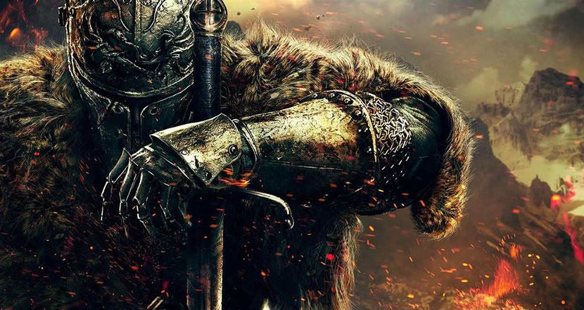

Meu primeiro contato com a série Souls.
Primeiro ContatoA pouco tempo tenho animado mais em jogar fps, e já é uma constante na minha vida, esse hype em fps, que nunca dura muito assim como em quaisquer outros gêneros de jogos competitivos ou não. O que acontece é que como eu não animo mais jogar Counter-Strike Global Offensive sozinho até porque eu sou fresco com jogar a menos de 60fps, depois de meses decidi dar outra chance a valorant e viciei, pois é, vi que tava hypado com FPS novamente, e por conhecidência poucos dias depois deu se inicio a Steam Winter Sale, que assim como a Summer Sale, traz uma enxurrada de promoções e como já nem animava mais no CSGO, decidi vender todas ou boa parte das minhas skins acumulando uma "graninha" considerável, depois de dias com a carteira da Steam gorda decidi adiquirir um título muito conhecido mas que por inúmeros motivos nunca tinha me dado a chance de jogar, comprei Dark Souls II.
Bom, a princípio meu primeiro contato com o jogo assim como acho que a grande maioria foi assimilar os controles pra com isso ter uma resposta mais rápida porque achei que o esquema era apenas ser veloz, mas me enganei arduamente, e pra variar, apanhei e apanhei mais um pouco, e mais um bocado e finalmente, apanhei mais. O que acontece é que a impressão que eu tinha antes de jogar Dark Souls, de que era um jogo estressante e eu pelo meu temperamento explosivo de alguém extremamente "tiltável" eu não fosse aguentar passar muito tempo jogando (ou tentando), na verdade não foi como o esperado, com o tempo e com ajuda de alguns videos como por exemplo "Dark Souls 2: Começando Bem" do Filipe Ramos ou o "o dark souls das reviews de jogos" do GEMAPLYS, sendo esse segundo INCRÍVEL, recomendo não só pra quem joga, mas pra quem nunca sequer viu nadarelacionado a série.
Horas e tentativas a fio e muito esforço e alguns vídeos a mais fui entendendo a verdadeira forma de jogar, como pensar e agir, e aquele "medo" existente não sumiu, pelo simples fato de que qualquer oponente por mais simples que seja, tem um potencial de te matar com 2-3 hits sem ao menos você esperar, mas com conhecimento e paciência você entende o padrão de golpes e movimentação dos seus oponentes e com isso você tem noção de quando se tem uma brecha pra castigá-lo e conseguir uma vitória que na teoria parece ser longa, mas que geralmente, principalmente com os oponentes mais comuns com o tempo são bem tranquilos de se enfrentar.
Depois de um inicio de jogo desafiador em Dark Souls II, um amigo me recomendou comprar o Dark Souls III, graficamente mais bonito e com uma mecânica mais newbie friendly, e amigos, que experiência, acho que o principal não seria os gráficos mas sim a física e a mecânica mais polida talvez, sem muitos delays de movimentação (que são frequentes no segundo jogo), como um golpe que te acerta durante o rolamento e que muitas vezes irritava, mas acho que isso que faz Dark Souls II ser mais amado na saga e considerado difícil, fora a quantidade de bosses existentes ser quase o dobro dos demais jogos, no geral o jogo conta com inúmeras possibilidades, atalhos, quests "invisíveis" e isso tudo resulta num jogo que com certeza vai garantir algumas centenas de horas de diversão e estresse, como minha saga pra conseguir minha Uchigatana e aquele Mestre Espadachim que fica do lado da Firelink Shrine, aquele desgraçado que eu não consegui vencer do "método fácil" derrubando ele do precipício, então precisei lutar com ele ao menos 7x pra finalmente vencer aquele desgraçado (coisa que se fosse no segundo jogo, custaria metade da minha barra de vida), e isso é outra coisa que me fez gostar mais no Dark Souls III, o fato de que você não é prejudicado por morrer muito, já que a cada morte no segundo título você perde uma pequena porcentagem de vida que só é recuperada usando um item chamado "Human Effigy".
Ainda estou no inicio de ambos os jogos, vou demorar um pouco pra finalizar ambos, mas assim que conclui-los eu volto pra passar minhas impressões finais sobre os jogos, mas de agora eu já recomendo a qualquer um, sair um pouco da bolha de jogos fáceis e que seguram na mão do jogador sempre que uma dificuldade aparece, não é um jogo impossível, mas um jogo que faz com que o jogador se dedique para progredir e a sua dedicação que irá ditar a dificuldade com a qual você irá sentir no jogo, por hoje é isso, até a próxima.